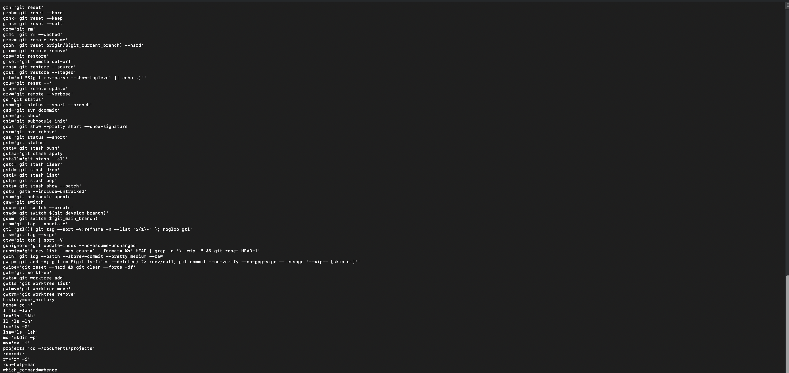
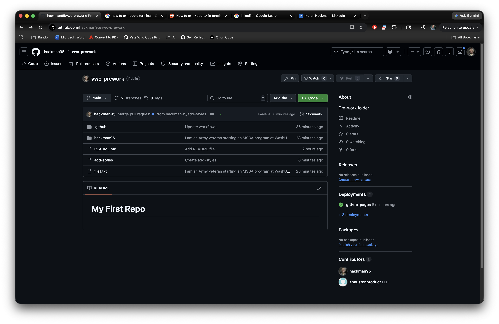
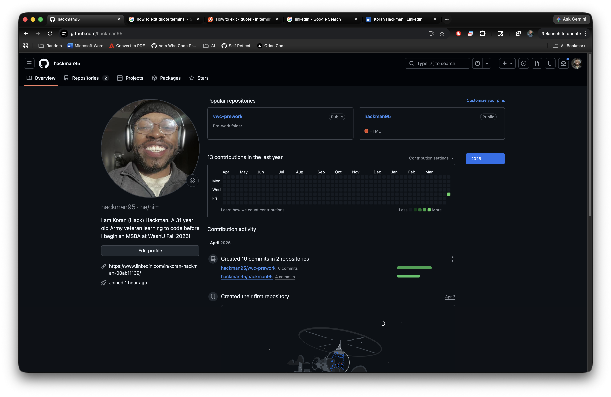

01
Terminal & Aliases
Demonstrating custom ZSH aliases configured for efficient workflow and command-line data management.

Arabic Linguist | Civil Affairs Specialist | Business & Data Analyst
My journey began in military service, where I served as a Civil Affairs Specialist before specializing as an Arabic Linguist. I was a High Honor Grad, mastering 4 distinct dialects—a feat that required intense discipline, analytical depth, and a relentless focus on precision.
Beyond my military service, I am an MBA Graduate and a current MSBA Candidate at Washington University in St. Louis (WashU). Translating complex human language dialects taught me how to decompose intricate systems into logical components, a skill that translates perfectly into Data Analysis, Strategic Operations, and Business Intelligence.
I am currently completing the Vets Who Code prework program, leveraging technical and analytical tools to prepare for a career in data-driven strategy and business analysis.
Evidence of environment configuration and module completion.
Demonstrating custom ZSH aliases configured for efficient workflow and command-line data management.

My first professional repository, demonstrating version control practices and project organization.

Active profile overview showing contribution history and commitment to continuous learning.
